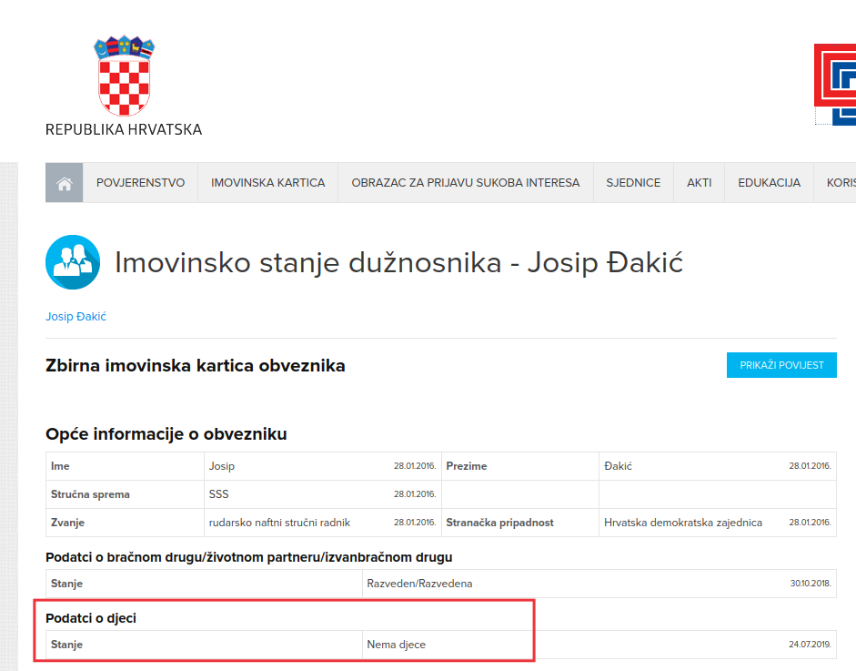

Prije dvije godine se povela rasprava o naknadama za odvojeni život na koje brojni saborski zastupnici imaju pravo. Tada se i doznalo da Josip Đakić prima naknadu za odvojeni život iako je razveden i ima tri odrasla sina. Jedan od Đakićevih komentara tada je bio:
A što, da ih brišem? Kad su nestašni, onda su moji, a kada su pitanja obitelji, onda kao da nisu moji…
Čisto kao podjsetnik, nestašluk sinova je (od najmlađeg ka najstarijem):
- prijetnja smrću policajcima
- prijetnja novinaru + javno poticanje na nasilje i mržnju
- pijani nasrtaj autom na osobu.
No, nestašluk na stranu, čini se da Josip Đakić ima sinove kad treba primati naknadu za odvojen život, ali ih nema kad treba popuniti imovinsku karticu:

Istini za volju, u ranijoj verziji imovinske kartice je naveo da ima djece.
Možda se zbog nestašluka
odrekao sinova?